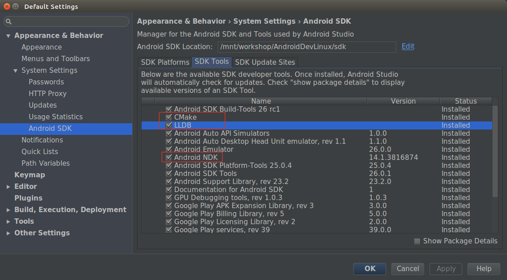
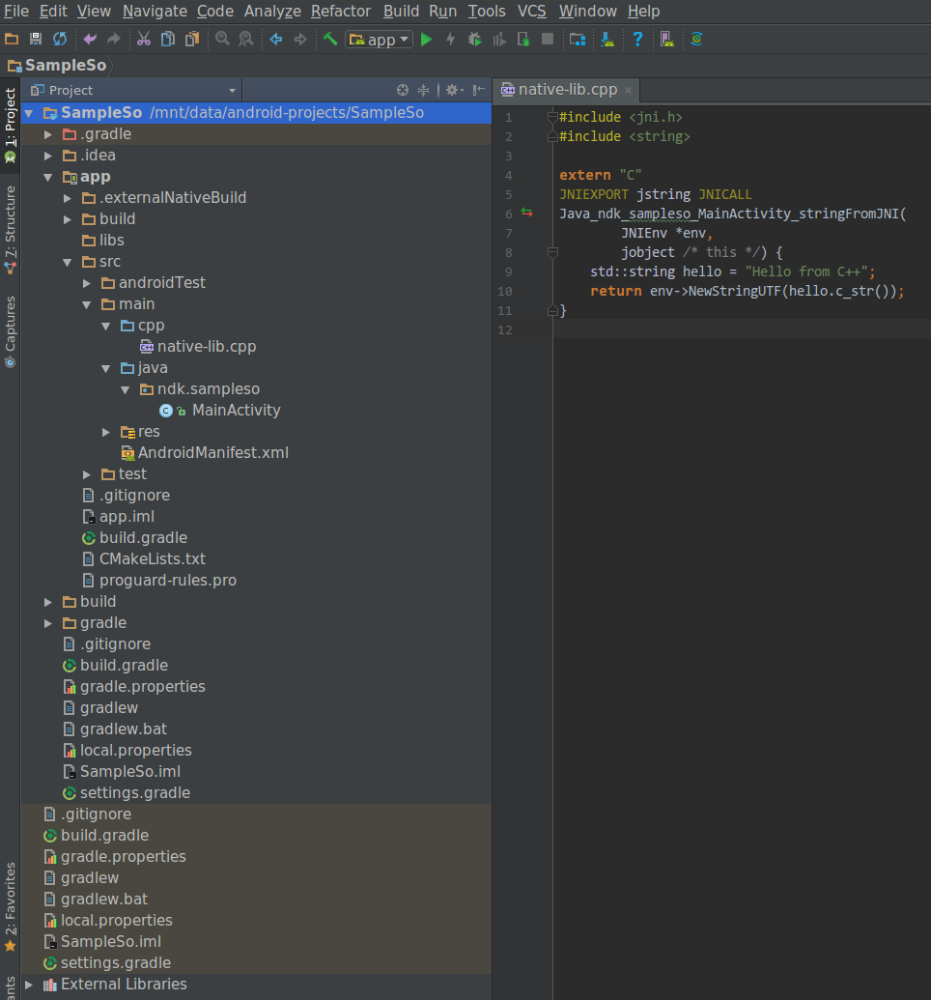
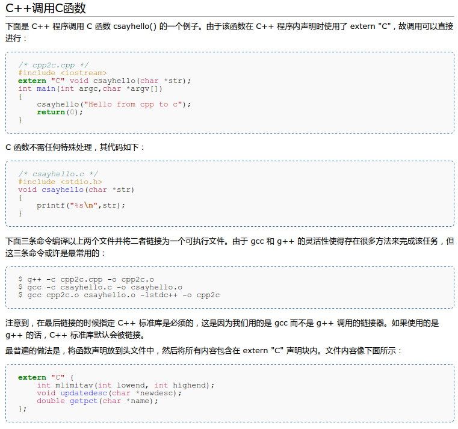

Android Studio(2.2 及其以上)配合 Gradle 插件(2.2.0 及其以上), 你可以直接编译工程中的 C/C++ 代码为 native 库,然后 Gradle 会自动将其集成到 APK里面. Android Studio 默认的 native 库构建工具是 CMake,也支持 ndk-build 工具来编译 native 代码. Android 官方指南 [1] 中所建议的是:新创建的 native 库,应该使用 CMake 来编译. 这里将说明如何在 Android Studio 中使用 CMake 来编译一个 native 库.
由于 AS 提供了一个 Action 运行框,其快捷键为 Ctrl+Shift+A ,在运行框中输入大概的内容, 就能模糊匹配到动作选项,很方便,以下,我打开某个选项时,说打开 Action 就是指 Ctrl+Shift+A打开运行框.
Ubuntu 16.04 LTS x64 + Android Studio 2.3.1
你需要确保 NDK,CMake,LLDB 已经安装了,如下所示:
如果没有安装,勾选安装即可,为了加快下载速度,可以使用国内镜像,镜像的具体设置就从略了.
另外一个需要说的是,如果你以前单独安装了 ndk,那么你只需要将整个 ndk 目录拷贝到 android sdk 目录下, 将其命名为 ndk-bundle 即可. 为了更清晰的说明问题,下面是一个结构图:
bugnofree@ishell:sdk$ tree -L 1 bugnofree@ishell:sdk$ tree ndk-bundle/ -L 1 . ndk-bundle/ ├── add-ons ├── build ├── build-tools ├── CHANGELOG.md ├── cmake ├── ndk-build ├── docs ├── ndk-depends ├── emulator ├── ndk-gdb ├── extras ├── ndk-stack ├── licenses ├── ndk-which ├── lldb ├── package.xml ├── ndk-bundle ├── platforms ├── patcher ├── prebuilt ├── platforms ├── python-packages ├── platform-tools ├── shader-tools ├── samples ├── simpleperf ├── skins ├── source.properties ├── sources ├── sources ├── system-images ├── sysroot ├── temp └── toolchains └── tools
打开 AS 新建一个工程,早起版本的 AS 可以通过命令行建立工程,不过 2.3 以后的版本取消了命令行模式, 让人很不爽,但是没办法,有如下几步 ╮(╯▽╰)╭...全都是图片...而且不是很重要, 因此我将其放到 这个页面了:
之后 AS 就默默地吭哧吭哧做些事情,然后就打开了主界面,将工程的视图调整为 Project 类型后, 整个结构如下:
其中 app/src/main/cpp 中存放的就是你的 native 文件,比如 C/C++ 源代码,文件头,预编译库等. AS 会默认创建一个 native-lib.cpp 文件,以帮助开发者使用 native. 另一个目录 app/.externalNativeBuild,包含了 CMake 或 ndk-build 所用到的的构建脚本. 这里使用 CMake,默认会生成的文件为 CMakeLists.txt .
工程建立后,你就可以编译(Build/Make project)并运行(Run/Run app)项目了. 默认的是 debug 级别的应用,我们当然可以设置输出为 release 级别的, 依次 Build/Select Build Variant,然后选择 release 即可.
生成的 so 文件可以在 app/build/intermediates 下看到, 根据编译的类型,具体分为 debug 和 release 版本的 so 库文件.
当我们的 native 方法较多且使用 jni 规范命名法使用它们时, 因为名称比较长且容易出错,这就显得很麻烦.我们可以通过 javah 这个命令来帮助我们生成一个头文件.
首先将要用到的 native 方法声明放到 ndk/sampleso/MainActivity.java 中, 然后切换到包的根目录,执行如下的 javah 命令:
javah -d ../cpp -jni ndk.sampleso.MainActivity
就会自动根据 MainActivity.java 中的 native 方法生成对应的头文件.
很多人这一步做的不正确,提示文件找不到,大多原因就是目录没有找正确. 这里的包名为 ndk.sampleso,所以包的根目录为 ndk, ndk 的父目录为 java 目录, 命令行切换到 java 目录:app/src/java,然后执行上述命令就可以生成头文件了, -d选项用于指定生成头文件的存放目录.
这里生成的 jni 头文件名称为 ndk_sampleso_MainActivity.h ,位于 cpp 目录下面, 然后我们修改 native-lib.cpp 文件以包含该头文件(我也另外添加了一些其他的代码), 同时为了阐述清楚,三个源代码文件 MainActivity.java,native-lib.cpp,ndk_sampleso_MainActivity.h如下:
//MainActivity.java package ndk.sampleso; import android.support.v7.app.AppCompatActivity; import android.os.Bundle; import android.widget.TextView; public class MainActivity extends AppCompatActivity { // Used to load the 'native-lib' library on application startup. static { System.loadLibrary("native-lib"); } @Override protected void onCreate(Bundle savedInstanceState) { super.onCreate(savedInstanceState); setContentView(R.layout.activity_main); // Example of a call to a native method TextView tv = (TextView) findViewById(R.id.sample_text); tv.setText(stringFromJNI()); } /** * A native method that is implemented by the 'native-lib' native library, * which is packaged with this application. */ public native String stringFromJNI(); }
这里你可以看到如何加载一个 so 库,如何声明一个 native 方法,如何去用一个 native 方法. native 的具体实现则是在 native-lib.cpp 中:
// native-lib.cpp #include "ndk_sampleso_MainActivity.h" #include <string> #include <android/log.h> #define TAG "DEMOSO" #define LOGI(...) ((void)__android_log_print(ANDROID_LOG_INFO, TAG, __VA_ARGS__)) void __attribute__ ((constructor)) demo_init(void); JNIEXPORT jstring JNICALL Java_ndk_sampleso_MainActivity_stringFromJNI( JNIEnv *env, jobject /* this */) { std::string hello = "Hello from C++"; LOGI("stringFromJNI"); return env->NewStringUTF(hello.c_str()); } extern "C" void _init(void) { LOGI("_init()"); } void demo_init(void) { LOGI("demo_init()"); }
native-lib.cpp 被编译后将会生成一个 libnative-lib.so 文件, 包含的头文件 ndk_sampleso_MainActivity.h 稍后将会提到. 在这里为了打印一些调试信息,不能用 printf 了,为了方便, 定义了一个宏 LOGI,实现了类似 printf 的功能, 在 logcat 中过滤 DEMOSO 即可查看调试信息.
在 android so 安全中,有几个函数应特别注意,这里面我已经添加了几个样例. 普通的 jni 函数 Java_ndk_sampleso_MainActivity_stringFromJNI 就不多说了, 这里面我设置了一个构造函数,它们会在 so 库调用后接手程序流程,在真正的 so 代码执行前执行, 对 so 做一些初始化工作,这样声明的函数将会被放到 .init_array 节区中, 你可以声明多个这样的函数.它们都会被执行,执行的顺序与声明的顺序无关,而与实现的顺序有关. 假如说现在依次声明了三个初始化函数:
void __attribute__ ((constructor)) b(void);
void __attribute__ ((constructor)) a(void);
void __attribute__ ((constructor)) c(void);
void c(void){ LOGI("c()"); }
void b(void){ LOGI("b()"); }
void a(void){ LOGI("a()"); }
那么这三个函数执行顺序是 c(),b(),a(). 你肯定也看到了另外一个函数 extern "C" void _init(void);, 这个函数的执行时机更早,它位于 .text节区中, 其名字必须是 _init, 它的作用是什么呢?用于控制构造函数和析构函数 [2].然而用这些函数必须很小心, 已经不建议使用,使用它们可能导致无法预料的结果. 正如这位前辈遇到的诡异问题Tricky question about '_init' function of a shared lib . 你也看到了这里用到了 extern "C"声明, 由于我们是 C++ 文件,而这一声明表示让编译器以 C 语言规范的编译方式编译该函数, 且该函数是被外部所使用的.
当我们运行上述程序时,通过 logcat 我们看到的打印信息如下:
05-23 14:19:54.831 18978-18978/ndk.sampleso I/DEMOSO: _init() 05-23 14:19:54.831 18978-18978/ndk.sampleso I/DEMOSO: demo_init() 05-23 14:19:55.061 18978-18978/ndk.sampleso I/DEMOSO: stringFromJNI
// ndk_sampleso_MainActivity.h /* DO NOT EDIT THIS FILE - it is machine generated */ #include <jni.h> /* Header for class ndk_sampleso_MainActivity */ #ifndef _Included_ndk_sampleso_MainActivity #define _Included_ndk_sampleso_MainActivity #ifdef __cplusplus extern "C" { #endif /* * Class: ndk_sampleso_MainActivity * Method: stringFromJNI * Signature: ()Ljava/lang/String; */ JNIEXPORT jstring JNICALL Java_ndk_sampleso_MainActivity_stringFromJNI (JNIEnv *, jobject); #ifdef __cplusplus } #endif #endif
这个文件自动生成的,我们不需要对其修改, 可能有些人不大理解这里 #ifdef,extern "C"之类的东西, 接下来两小节,我将简单介绍一下 C/C++ 中的预定义指令和 C/C++ 混合编程.
以 # 开头的指令叫做预处理指令(Preprocessor directives), 每一个预处理指令占一行,行的开头不能有任何空格,行尾也没有分号, 如果太长需要多行书写,可以在行尾用 \来扩展.
定义宏的指令为 #define,这个我们应该很熟悉了,它的语法如下:
#define identifier replacement
编译器将会把所有的 identifier 替换为 replacement . 与其对应的是 #undef指令,它取消对一个宏的定义. 一个例子如下:
#define TABLE_SIZE 100 int table1[TABLE_SIZE]; #undef TABLE_SIZE #define TABLE_SIZE 200 int table2[TABLE_SIZE];
更高级的用法是宏函数.使用的符号有两个: # 和 ##.
第一个通过使用 #给宏传递参数, #之后跟着一个参数名,表示对该参数的引用. 比如说下面这个例子:
#define str(x) #x cout << str(test); //等价于下面这句 cout << "test";
##则用于直白的连接宏函数中的参数.比如:
#define glue(a,b) a ## b glue(c,out) << "test"; //等价于下面这句 cout << "test";
这里面的指令主要包括下面这些:
#ifdef,#ifndef,#if,#endif,#else,#elif
这些指令的用法很广泛,很常见的一种就如 ndk_sampleso_MainActivity.h 里面的用法. 在头文件中,我们经常会定义一些变量,工具函数等等之类的东西, 如果多次包含同一个头文件,将会产生编译错误(重复了变量或者函数声明等), 为了解决这种重复包含问题,就用到了条件指令.
条件指令中,额外提供了一个操作符 defined, 用于判断一个宏是否已经被定义了,它的语法为 defined identifier 或者 defined (identifier). 稍后的例子中将会提到.
条件指令也支持基本的算术运算以及比较操作,比如+,-,*,/,==,>,<等
这些条件指令的用法类似与 C/C++ 中的 if..else.. 语句,故不再详细说明,下面给出一个例子:
#define ABCD 2 #include <iostream> int main() { #ifdef ABCD std::cout << "1: yes\n"; #else std::cout << "1: no\n"; #endif #ifndef ABCD std::cout << "2: no1\n"; #elif ABCD == 2 std::cout << "2: yes\n"; #else std::cout << "2: no2\n"; #endif #if !defined(DCBA) && (ABCD < 2*4-3) std::cout << "3: yes\n"; #endif }
下面的宏名总是被定义了的,你可以代码中引用,它们都是以双下划线开头.
由于 C++ 支持函数重载,C++ 编译器对函数进行编译时,和 C 编译器对函数的编译方法是不一样的, 举个简单的例子,同样的一个函数 void demo(int a,int b);, C++ 为了支持重载,编译后其内部符号为 _demo_int_int, C 则为 _demo,这样的话,C++中可以对demo进行重载, 比如说重载函数为 void demo(int a,double b), 那么C++就可以编译为 _demo_int_double.由于内部符号的不同, C 和 C++ 互相调用函数时就会产生找不到内部符号,从而导致没办法进行函数调用. 为了解决这个问题,因此用到了 extern "C",它就是告诉 C++ 编译器, 喂,伙计,你把我按照 C 的编译方式来搞.这样的话,C/C++ 就能够互相调用函数了. 这种互相调用分为两种,一是 C 调用 C++,一是 C++ 调用 C. Ubuntu 中文 wiki 上有一个非常好的例子 [5],我也就不再啰嗦了:
有时候,我们或许只是想单独的编译 so 库文件,然后来研究 so 文件. 目前我们可以借助 ndk-build 来完成.一个 demo 例子工程结构如下:
main/
├── java
│ └── SampleSo.java
└── jni
├── Android.mk
├── Application.mk
└── SampleSo.c
各个文件的内容如下所示:
SampleSo.java
public class SampleSo
{
public native String printHello();
}
/*
bugnofree@ishell:java$ javah -jni -d ../jni SampleSo
*/
Android.mk
LOCAL_PATH := $(call my-dir)
include $(CLEAR_VARS)
LOCAL_MODULE := sampleso
LOCAL_SRC_FILES := SampleSo.c
include $(BUILD_SHARED_LIBRARY)
Application.mk
APP_ABI := all
SampleSo.c
#include "SampleSo.h"
JNIEXPORT jstring JNICALL
Java_sample_SampleSo_printHello (JNIEnv *env, jobject thiz)
{
return (*env)->NewStringUTF(env, "Hello from JNI ! Compiled with ABI");
}
先进入 java 目录,执行下 javah 命令生成头文件,然后进入到 jni 目录执行 ndk-build 命令, 就会在 jni 同目录的目录下生成库文件了.结构示意如下:
main
├── java
│ └── SampleSo.java
├── jni
│ ├── Android.mk
│ ├── Application.mk
│ ├── SampleSo.c
│ └── SampleSo.h
├── libs
│ ├── arm64-v8a
│ ├── armeabi
│ ├── armeabi-v7a
│ ├── mips
│ ├── mips64
│ ├── x86
│ └── x86_64
└── obj
└── local